BT & SİBER RİSK YÖNETİMİ
Risk envanteri · 5×5 değerlendirme · aksiyon takibi
Demo, çalışan uygulamadan alınmış gerçek çıktıdır — ekran görüntüsü değil. Gezinme çalışır; kaydetme ve filtreleme çalışmaz.
NEDİR
RiskOps, bir kurumun BT ve siber güvenlik risklerini kayıt altına almak, olasılık × etki üzerinden puanlamak, azaltıcı aksiyonları takip etmek ve yönetime sunulabilir belgeler üretmek için yazıldı.

Otomatik risk kodu, 5×5 matris, yumuşak silme. Skor veritabanında üretilen kolon — uygulama onu hiç hesaplamaz, tutarsızlık imkânsız.
Riske bağlı azaltıcı aksiyonlar, sorumlu ve termin. Geciken aksiyonlar panelde ve raporda ayrıca işaretlenir.
Altı hazır rapor ve tek sayfalık Yönetici Özeti: antetli, gizlilik ibareli, imza bloklu yazdırma çıktısı.
SINIR
Bu ayrım projenin en önemli tasarım kararı, bu yüzden gizlenmiyor.
| Değildir | Neden önemli |
|---|---|
| Helpdesk / ticket sistemi | Burada “kapatılacak talep” yok; süregiden bir risk durumu var. |
| ITSM aracı | Varlık envanteri, değişiklik yönetimi ve SLA takibi kapsam dışı. |
| Zafiyet tarayıcı | Tarama yapmaz; tarama sonuçlarının yönetildiği yerdir. |
| SIEM | Log toplamaz, korelasyon kurmaz. |
EKRANLAR
Aşağıdaki görseller demonun ilgili ekranına gider. Demo, çalışan kurulumdan indirilmiş HTML’dir: aynı CSS, aynı veri, aynı düzen.
KALİTE
Sayılar depodaki araçların çıktısıdır; her sürüm CI’da yeniden ölçülür.
password_hash(), her POST’ta CSRFunsafe-inline yok — satır içi script yokNeden çerçeve yok, neden çeviri anahtarı Türkçe metnin kendisi, neden eklentiler için kum havuzu iddia edilmiyor — hepsi gerekçesiyle ADR’lerde.
KURULUM
git clone https://github.com/CodeByPinar/riskops.git
cd riskops && docker compose up
Tarayıcıda localhost:8080. Demo verisi
isteğe bağlı olarak tek komutla yüklenir.
Ubuntu 24.04 · PHP 8.3 · MariaDB 10.11 · Apache 2.4. Şema tek dosya, iki kez yüklenebilir (idempotent). Adımlar README’de.